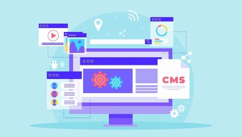

Why Developing A Wordpress Website Is
Essential For Your Business In 2022?
Essential For Your Business In 2022?
The rise of social media, the cloud and mobile development have made it easier than ever for small and medium-sized businesses to create and maintain a website. With a simple drag and drop interface, creating a WordPress website with StudioPress Themes is as straightforward a process as building any other application.
WordPress is the world's leading content management system resource for businesses. It permits your website to provide lively and rich content to your customers. WordPress web development is required to maintain up with your industry in this era of digital marketing, if you want to beat your competitors.
What Makes WordPress Website Development So Popular?
Even though the WordPress platform has various pricing options, many businesses appreciate the platform because, from start to finish, each part of the website building process is easy and straightforward.

Establishing an optimized internet marketing strategy is now 1 of the major factors associated with online success . Without such a well thought-out and efficient strategy, it will be difficult for you regardless of how long you attempt to flourish. Considering the WordPress platform is your own first priority for a strategic plan is a must. For this very reason, website creation on the WordPress site will be an extremely effective strategy.
5 Most Wonderful Benefits of WordPress Website Development for Your Business
1. You can do your own!
You can create a WordPress website for your business by yourself, with zero help from a developer or assistance from a techie. Updating WordPress websites is astonishingly simple, takes only a few minutes to set everything up, features security systems to defend it, and lets you install and manage all the website pages, all by yourself.
You don't need prior programming knowledge or web development experience in order to build WordPress websites. The interface is very user-friendly and customizable.
2. Save your valuable money and time!
WordPress saves you money and time! WordPress is free and can be downloaded for free, installed on your website without any complications and then carry out whatever you'd like with it. If you're a small business operator and don't have a lot of cash to spend on a site, WordPress can help. It can go a big step further in helping your company grow as time passes.
3. It is safe and safer than ever!
Another advantage of WordPress website development is that your site is now one of the safest on the web. WordPress continues to enhance its security with each software update, and website owners can now make themselves more secure by installing plugins and taking basic precautions.
Security and safety are foremost in your mind when you're thinking of designing your website, especially during this time of heightened security risks. You will be able to acquire your business only when you have a secure online platform. WordPress is the best choice for this. You can trust WordPress.
4. It is highly responsive!
Site development for your business is worth a try, I think, since one exceptional feature it has is responsiveness. Responsiveness is something that every business owner wants for their sites. Most WordPress themes are created to be highly responsive so your webpage will look fantastic and swish on any device.
The official WordPress Theme Directory has over 2,000 totally free themes. If you want to buy more, you can visit business sites like Theme Forest, StudioPress, and WooThemes and get even more at no cost to you.
5. It ranks top on Google!
It will also be well worthwhile for your website Search engine optimization. WordPress contains built-in Search engine optimization (Search Engine Optimization) features. The more complex and unique the content, the higher it automatically ranks on search engines.
There are a number of guides and plugins that will help you optimize your own personal SEO for a higher ranking on search engines. Don't forget that having a website without optimization is just like having no website at all. For that reason, it's best to develop WordPress sites.
In conclusion, WordPress powers approximately 25% of the web, with an estimated 60 million websites across the world using its content management system. WordPress is free, open-source software that can be downloaded by anyone, for any purpose, without any costs. There are a wide range of themes, plugins and widgets available for WordPress.